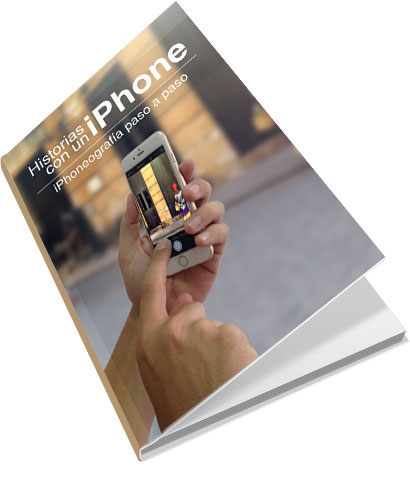

La fotografía con smartphones lleva desde hace unos años cautivando cada vez más seguidores, y es que la velocidad con que se hace las fotos, se editan y se publican en Internet con estos dispositivos, le ha quitado terreno a las cámaras clásicas.
Todo este proceso fotográfico es bien sencillo, cualquiera puede hacer fotos… pero si quieres que tu trabajo destaque sobre los demás, lo simple puede tornarse “complejo”.
iPhoneografía paso a paso, una guía en la que conocerás más a fondo la aplicación Cámara que trae instalado el iPhone, con trucos que quizás no conocías y técnicas con las que tus fotos serán más atractivas que antes. Fundamentos básicos de la fotografía, uso de diferentes aplicaciones cámaras con nuevas características, así como el uso de editores de fotos dentro del mismo iPhone, la utilización de accesorios y otros contenidos son abarcados en este libro.
Aunque como dispositivo principal se use un iPhone, también para los usuarios de Android, las técnicas y conceptos explicados aquí pueden ser usados por ustedes, así como muchas de las aplicaciones que se mencionan existen para ese sistema operativo.
Este libro es para aquel que le gusta la fotografía en sí, en especial para aquello que han convertido su iPhone en su principal herramienta fotográfica, tanto para tomar las fotos como para editarlas.
El objetivo del libro es abarcar la mayor cantidad de contenido que al ser aplicados se logren fotos de calidad. En este se dará a conocer la manera aprovechar cada parte de la cámara nativa del iPhone, así como fundamentos básicos de la fotografía, uso de diferentes aplicaciones cámaras, editores, la utilización de accesorios y buenas prácticas a la hora de compartir las fotos en redes sociales como es el caso de Instagram.
A continuación les dejo con un resumen de cada capítulo de esta guía, la cual si te interesa este libro puedes adquirirlo en Leanpub por $9.99 USD.
Capítulo 1: La Cámara del iPhone
Conoce las características de la cámara física del iPhone, cuál es su apertura, la calidad con la que realizará las fotos de manera que puedas lograr un mejor producto fotográfico.
Capítulo 2: Fundamentos básicos (Composición)
En este capítulo se describen algunas reglas básicas de la composición de la fotografía en general que se usan tanto con una cámara DSLR o en este caso con un iPhone. El uso de estas pautas hará que se logren fotografías más poderosas y atractivas.
Capítulo 3: Las fotos con el iPhone
La forma o el lugar en que se toma la foto con el iPhone definen su estilo y clasificación. Descubre como categorizar el trabajo realizado, así como trucos en los diferentes géneros.
Capítulo 4: Perfecciona las fotos
La luz juega un papel principal en las fotos ya que sin una no existiera la otra. En este capítulo el objetivo es dominar la luz. Conquístala y las fotos será realmente increíbles.
Capítulo 5: Variantes de cámaras
El mercado de aplicaciones de Apple está lleno de variantes de cámaras para la sustitución de la nativa. Debido a las diferentes características ofrecen cada una de estas aqui te comento acerca de tres de ellas Alcance iii
Capítulo 6: Edita las fotos
Agregar textura, efectos y modifica las fotos con el uso de editores. Cuáles son los más utilizados y por qué. El límite de su uso es la imaginación misma.
Capítulo 7: Accesorios
Trípodes, lentes incorporados, flash externo, luces, son diferentes accesorios que pueden incorporarse al iPhone para lograr fotos con mucha mayor calidad. Descubre cuales son estos.
Capítulo 8: Instagram
Por qué elegir Instagram para compartir tus fotos en las Redes Sociales y buenas prácticas a la hora de publicarlas esta red social.
Extra: Consejos, trucos y buenos hábitos
Algunos buenos hábitos y trucos que se puedes aplicar a la hora de hacer las fotos que harán que marques la diferencia.
Inspiración
Una pequeña galería de fotos tomadas con el iPhone que puede servir o no de inspiración para la próxima foto que realices.